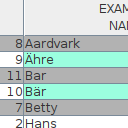
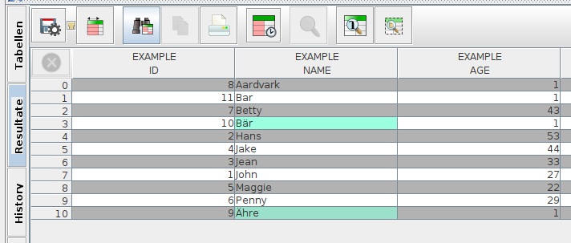
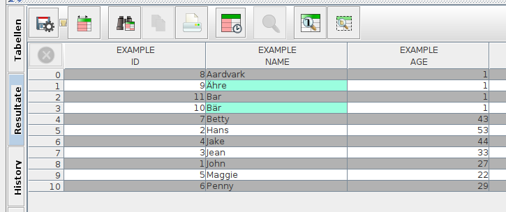

Collations für SQLite mittels BeanShell

Ich habe neulich übere eine Möglichkeit berichtet, SQLite mittels der sQLshell und Beanshell-Skripten um SQL-Funktionen zu erweitern. Ich habe weitere Untersuchungen in dieser Richtung angestellt.
Man kann die Sortierreihenfolge für Strings - nicht nur - in SQLite durch -link https://www.sqlite.org/datatype3.html#collation=Collations anpassen.
Für uns Deutsche geht es dabei meistens um die Sortierung der Umlaute
Ich habe - die vorangegangenen Erfahrungen nutzend - entsprechende Adapter entwickelt, mit denen man einfach BeanShell-Fragmente als Collations definieren und in der sQLshell nutzen kann. Damit kann man komfortabel auf die bereits von Java angebotenen Bordmittel zurückgreifen, um die Sortierung problembezogen anzupassen.
Da - wie bereits dargestellt - geskriptete Objekte in BeanShell nur als Implementierungen von Interfaces gedacht und nicht zur anonymen Ableitung von Klassen gedacht sind, musste ich zu der bekannten List greifen: Ich definierte ein neues Interface:
public interface Collation
{
int xCompare(String str1, String str2);
}
und schrieb eine Klasse, um die bestehende SQLite API und die sQLshell zu verbinden:
public class CollationBridge extends org.sqlite.Collation
{
protected final Collation collation;
public CollationBridge(Collation collation)
{
super();
this.collation = collation;
}
@Override
public int xCompare(String str1, String str2)
{
return collation.xCompare(str1,str2);
}
}
Damit kann man nun in der sQLshell beliebige Collations definieren:
conn=sQLshellAPI.getCurrentlyVisibleShell().getConnection();
specs=sQLshellAPI.getCurrentlyVisibleShell().getDBMSInterface().getDatabaseSpecifics().orElse(null);
coll=java.text.Collator.getInstance(java.util.Locale.GERMAN);
if(specs!=null)
{
myCollation=new de.elbosso.db.spi.impl.sqlite.Collation() {
protected int xCompare(String str1, String str2) {
return coll.compare(str1,str2);
}
};
collation=new de.elbosso.db.spi.impl.sqlite.CollationBridge(myCollation);
specs.create_collation("myCollation", collation);
}
Die Auswirkungen zeigen sich, wenn man dieselbe Abfrage mit und ohne diese Collation ausführt:
select * from EXAMPLE ORDER BY NAME
ergibt:

Sortierung ohne explizite Angabe einer Collationund mit unserer selbst definierten Collation
select * from EXAMPLE ORDER BY NAME COLLATE myCollation
zeigt sich eine andere Reihenfolge:

Sortierung unter Benutzung der mittels BeanShell definierten Collation 


Vor 5 Jahren hier im Blog
-
Streaming Server mit Linux
17.08.2019
Ich habe schon länger darüber nachgedacht, einmal zu versuchen, einen Streaming-Server aufzubauen. Da es in letzter Zeit wieder einmal sehr war draußen ist, habe ich die Zeit, die ich vor der Hitze Schutz suchte dazu genutzt, diese Idee in die Praxis umzusetzen...
Weiterlesen...
Tags
Android Basteln C und C++ Chaos Datenbanken Docker dWb+ ESP Wifi Garten Geo Git(lab|hub) Go GUI Gui Hardware Java Jupyter Komponenten Links Linux Markdown Markup Music Numerik PKI-X.509-CA Python QBrowser Rants Raspi Revisited Security Software-Test sQLshell TeleGrafana Verschiedenes Video Virtualisierung Windows Upcoming...
Neueste Artikel
- Futro s920 Booten übers Netz
Ich habe hier bereits von den Anfängen meiner Versuche berichtet, Ersatz für die Raspis und vergleichbarer Hardware zu finden.
Weiterlesen... - LinkCollections 2024 VI
Nach der letzten losen Zusammenstellung (für mich) interessanter Links aus den Tiefen des Internet von 2024 folgt hier gleich die nächste:
Weiterlesen... -
 Online Werkzeuge
Online Werkzeuge
Eine Liste interessanter Werkzeuge zur Benutzung "on the road"...
Weiterlesen...
Manche nennen es Blog, manche Web-Seite - ich schreibe hier hin und wieder über meine Erlebnisse, Rückschläge und Erleuchtungen bei meinen Hobbies.
Wer daran teilhaben und eventuell sogar davon profitieren möchte, muß damit leben, daß ich hin und wieder kleine Ausflüge in Bereiche mache, die nichts mit IT, Administration oder Softwareentwicklung zu tun haben.
Ich wünsche allen Lesern viel Spaß und hin und wieder einen kleinen AHA!-Effekt...
PS: Meine öffentlichen GitHub-Repositories findet man hier - meine öffentlichen GitLab-Repositories finden sich dagegen hier.